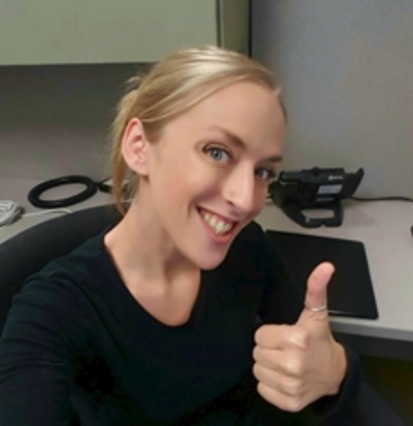

About Me
If Kate could think of anything clever to write about herself, this is where she would type it.
By day, she is your neighborhood friendly IT Support gal. By night, she is a knowledge-hungry web development student who seeks the satisfaction of achieving her dream job. When Kate isn't helping people turn their computer off and on again, she enjoys a wide variety of activities. Her favortie colors are electric blue, hot pink, black, and sparkle. She has a deep love and appreciation of music, although she has absolutely no talent for creating it. She will happily listen to anything from Pantera to Patsy Cline - Nine Inch Nails is her favorite. The other screen Kate enjoys staring at is the television, gaining entertainment from shows like The Sopranos, Archer, and Arrested Development.
Kate grew up being known as Katie, and she still responds to it. As she aged, she noticed that others began calling her Kate, making her speculate that she's a Kate now? She grew up in Bloomington, Minnesota as the child of two nurses and has an older brother. As an early teenager, she spent an unreasonable amount of time on the computer, and that's how her love of web development began. She sought to emulate the anime fan sites she enjoyed visiting, dreaming that she too, one day, will reap the satisfaction of having people enjoy something she made all by herself.
She has a busy and rewarding life nowadays, living in New Richmond, WI with her family. Her fiance keeps her sane with lots of coffee and giggles. Her daughter is currently ten years old and enjoys drawing cats. Speaking of cats, their cat is 18 years old, and is the cutest creature in the universe. When the weather is decent, they enjoy spending time outside and going for hikes.